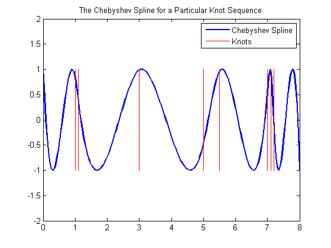
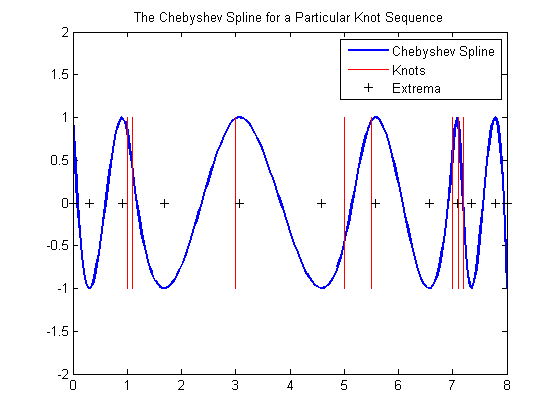
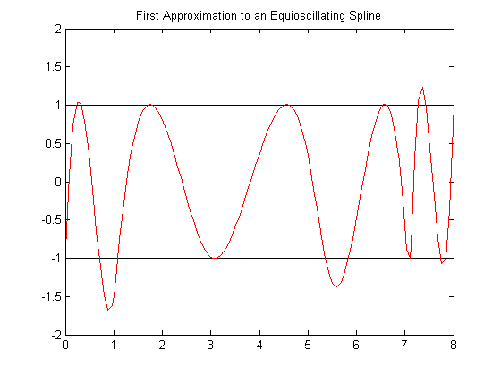
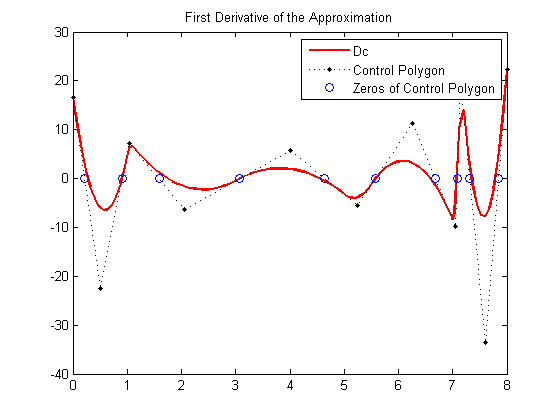
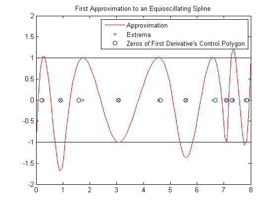
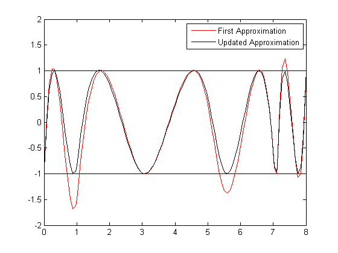
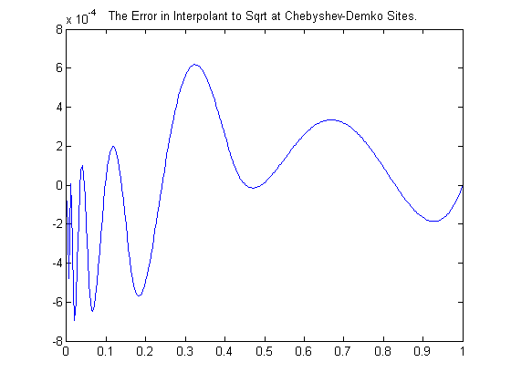

Construction of a Chebyshev Spline
This demo illustrates how to use commands from Curve Fitting Toolbox™ spline functions in a nontrivial application.
Contents
Chebyshev (a.k.a. Equioscillating) Spline Defined
By definition, for given knot sequence t of length n+k, C = C_{t,k} is the unique element of S_{t,k} of max-norm 1 that maximally oscillates on the interval [t_k .. t_{n+1}] and is positive near t_{n+1}. This means that there is a unique strictly increasing tau of length n so that the function C in S_{k,t} given by
C(tau(i)) = (-1)^{n-i},for all i, has max-norm 1 on [t_k .. t_{n+1}]. This implies that
tau(1) = t_k,
tau(n) = t_{n+1},and that
t_i < tau(i) < t_{k+i},for all i. In fact,
t_{i+1} <= tau(i) <= t_{i+k-1},for all i. This brings up the point that the knot sequence t is assumed to make such an inequality possible, which turns out to be equivalent to having all the elements of S_{k,t} continuous.
t = augknt([0 1 1.1 3 5 5.5 7 7.1 7.2 8], 4 ); [tau,C] = chbpnt(t,4); xx = sort([linspace(0,8,201),tau]); plot(xx,fnval(C,xx),'LineWidth',2); hold on breaks = knt2brk(t); bbb = repmat(breaks,3,1); sss = repmat([1;-1;NaN],1,length(breaks)); plot(bbb(:), sss(:),'r'); hold off ylim([-2 2]); title('The Chebyshev Spline for a Particular Knot Sequence'); legend({'Chebyshev Spline' 'Knots'});
In short, the Chebyshev spline C looks just like the Chebyshev polynomial. It performs similar functions. For example, its extrema tau are particularly good sites to interpolate at from S_{k,t} since the norm of the resulting projector is about as small as can be.
hold on plot(tau,zeros(size(tau)),'k+'); hold off legend({'Chebyshev Spline' 'Knots' 'Extrema'});
Choice of Spline Space
In this example, we try to construct C for a given spline space.
We deal with cubic splines with simple interior knots, specified by
k = 4; breaks = [0 1 1.1 3 5 5.5 7 7.1 7.2 8]; t = augknt(breaks, k)
t =
Columns 1 through 7
0 0 0 0 1.0000 1.1000 3.0000
Columns 8 through 14
5.0000 5.5000 7.0000 7.1000 7.2000 8.0000 8.0000
Columns 15 through 16
8.0000 8.0000
thus getting a spline space of dimension
n = length(t)-k
n =
12
Initial Guess
As our initial guess for the tau, we use the knot averages
tau(i) = (t_{i+1} + ... + t_{i+k-1})/(k-1)recommended as good interpolation site choices, and plot the resulting first approximation to C.
tau = aveknt(t,k)
tau =
Columns 1 through 7
0 0.3333 0.7000 1.7000 3.0333 4.5000 5.8333
Columns 8 through 12
6.5333 7.1000 7.4333 7.7333 8.0000
b = (-ones(1,n)).^(n-1:-1:0); c = spapi(t,tau,b); plot(breaks([1 end]),[1 1],'k', breaks([1 end]),[-1 -1],'k'); hold on fnplt(c,'r',1); hold off ylim([-2 2]); title('First Approximation to an Equioscillating Spline');
Iteration
For the complete leveling, we use the Remez algorithm. This means that we construct a new tau as the extrema of our current approximation, c, to C and try again.
Finding these extrema is itself an iterative process, namely, for finding the zeros of the derivative Dc of our current approximation c.
Dc = fnder(c);
We take the zeros of the control polygon of Dc as our first guess for the zeros of Dc. This control polygon has the vertices (tstar(i),coefs(i)), where coefs are the coefficients of Dc, and tstar the knot averages.
[knots,coefs,np,kp] = fnbrk(Dc, 'knots', 'coefs', 'n', 'order'); tstar = aveknt(knots,kp);
Since the control polygon is piecewise linear, its zeros are easy to compute. Here are those zeros.
npp = 1:np-1; guess = tstar(npp) - coefs(npp).*(diff(tstar)./diff(coefs)); fnplt(Dc,'r'); hold on plot(tstar,coefs,'k.:'); plot(guess,zeros(1,np-1),'o'); hold off title('First Derivative of the Approximation'); legend({'Dc' 'Control Polygon' 'Zeros of Control Polygon'});
This provides a very good first guess for the actual zeros of Dc.
Now we evaluate Dc at both these sets of sites.
sites = [guess; tau(2:n-1)]; values = fnval(Dc,sites);
Then we use two steps of the secant method, getting iterates sites(3,:) and sites(4,:), with values(3,:) and values(4,:) the corresponding values of Dc.
sites(3:4,:) = 0; values(3:4,:) = 0; for j = 2:3 rows = [j,j-1]; Dcd = diff(values(rows,:)); Dcd(Dcd==0) = 1; % guard against division by zero sites(j+1,:) = sites(j,:)-values(j,:).*(diff(sites(rows,:))./Dcd); values(j+1,:) = fnval(Dc,sites(j+1,:)); end
We take the last iterate as the computed zeros of Dc, i.e., the extrema of our current approximation, c. This is our new guess for tau.
tau = [tau(1) sites(4,:) tau(n)]
tau =
Columns 1 through 7
0 0.2759 0.9082 1.7437 3.0779 4.5532 5.5823
Columns 8 through 12
6.5843 7.0809 7.3448 7.7899 8.0000
plot(breaks([1 end]),[1 1],'k', breaks([1 end]),[-1 -1],'k'); hold on fnplt(c,'r',1); plot(guess,zeros(1,np-1),'o'); plot(tau(2:n-1),zeros(1,n-2),'x'); hold off title('First Approximation to an Equioscillating Spline'); h = get(gca,'Children'); legend(h([3 1 2]),{'Approximation' 'Extrema' ... 'Zeros of First Derivative''s Control Polygon'}); axis([0 8 -2 2]);
End of First Iteration Step
We compute the resulting new approximation to the Chebyshev spline using the new guess for tau.
cnew = spapi(t,tau,b);
The new approximation is more nearly an equioscillating spline.
plot(breaks([1 end]),[1 1],'k', breaks([1 end]),[-1 -1],'k'); hold on fnplt(c,'r',1); fnplt(cnew, 'k', 1); hold off h = get(gca,'Children'); legend(h([2 1]),{'First Approximation' 'Updated Approximation'}); axis([0 8 -2 2]);
If this is not close enough, simply try again, starting from this new tau. For this particular example, the next iteration already provides the Chebyshev spline to graphic accuracy.
Use of Chebyshev-Demko Points
The Chebyshev spline for a given spline space S_{k,t}, along with its extrema, are available as optional outputs from the chbpnt command in the toolbox. These extrema were proposed as good interpolation sites by Steven Demko, hence are now called the Chebyshev-Demko sites. This section shows an example of their use.
If you have decided to approximate the square-root function on the interval [0 .. 1] by cubic splines with knot sequence
k = 4; n = 10; t = augknt(((0:n)/n).^8,k);
then a good approximation to the square-root function from that specific spline space is given by
tau = chbpnt(t,k); sp = spapi(t,tau,sqrt(tau));
as is evidenced by the near equi-oscillation of the error.
xx = linspace(0,1,301);
plot(xx, fnval(sp,xx)-sqrt(xx));
title('The Error in Interpolant to Sqrt at Chebyshev-Demko Sites.');
